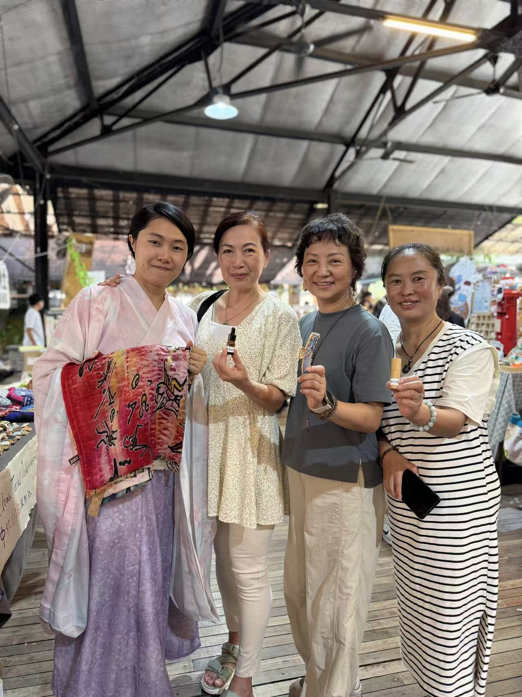
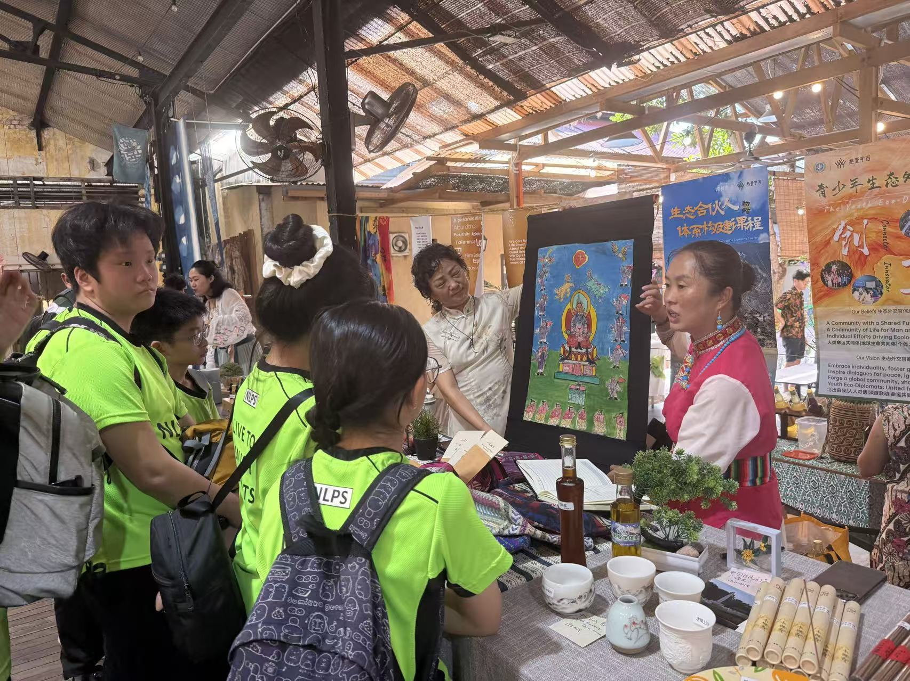
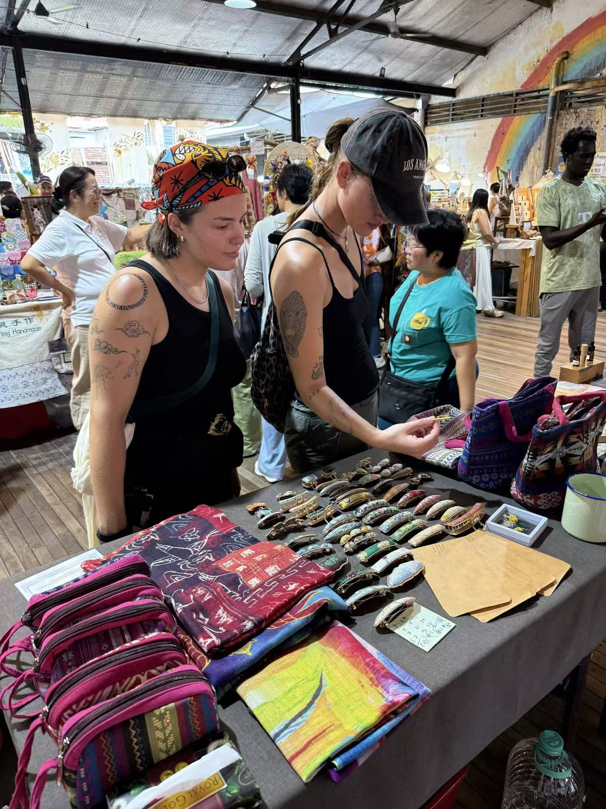

Earth Fest 2025 · Penang, Malaysia
Culture carried
across borders.
Bringing cultural stories from Lijiang into an international public setting through coordination, cultural exchange and event execution.
CROSS-BORDER COORDINATIONCULTURAL EXCHANGEEVENT EXECUTIONPUBLIC ENGAGEMENT
The gallery gives a cleaner view of the event environment, cultural booth and public-facing presentation.


